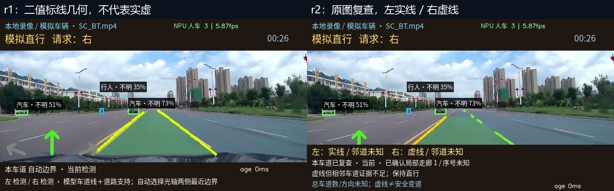

FPGA断电；仅本地录像。YOLOv8n / YOLOP：RKNN/NPU；实虚、左右边界细化、邻道：CPU图像/几何/短时规则。虚线≠安全变道，UNKNOWN保留。
交付说明 · 人工参考与失败 · 性能原始摘要 · 网页保护检查

不是按时间输出标签。定位只用于抽样，生产分类只读图像。右邻道此帧未知，不自动变道。完整原图、道路/标线掩码与JSON在 audit_final；全部最终核验前后对照。
直接录制动态网页canvas；保留录制PTS，未插帧或倍帧。转MP4前后帧数核对在clip_validation.json。短片会出现UNKNOWN，不能只看成功时刻推断整片正确。
| 素材/起点 | 处理fps | 预览新帧fps | 道路/语义Hz | 人车检测fps |
|---|---|---|---|---|
| SC_BT.mp4 / 30s | 13.39 | 13.39 | 7.32 | 12.40 |
| SC_BT2.mp4 / 11s | 14.60 | 14.60 | 8.01 | 13.57 |
| SC_YJ.mp4 / 128s | 13.76 | 13.13 | 7.45 | 13.01 |
| SC_YJ2.mp4 / 48s | 14.91 | 14.12 | 7.80 | 14.35 |
| SC_BT.mp4 / 55s | 12.32 | 11.73 | 7.27 | 11.43 |
道路目标8Hz，预览目标15fps；未达到全场景15。年龄从对应图像在香橙派解码起算，不是摄像头端到端延迟。
右虚线＋右邻走廊：REVIEW · 对应记录 · 暂停过期。可见总数、序号、方向仍未知；只显示局部走廊下限。夜间/遮挡/路缘仍有漏判和未知，详见失败记录，无人工真值准确率。